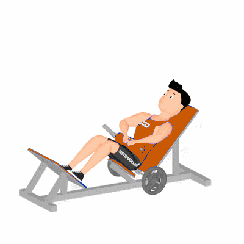

Elevação Pélvica no Aparelho (2)

Exercício de musculação realizado no aparelho para fortalecimento e hipertrofia dos glúteos e posteriores da coxa. Indicado para praticantes de todos os níveis.
Ficha Técnica
Tipo: Musculação
Grupo Muscular: Glúteo
Aparelho: Nenhum
Músculos: Nenhum
Como realizar
- Ajuste o aparelho e sente-se com as costas apoiadas no encosto;
- Posicione os pés sobre a plataforma e apoie a barra ou almofada sobre a pelve;
- Inspire e empurre o quadril para cima, estendendo-o até alinhar joelhos, quadris e ombros;
- Contraia os glúteos no topo do movimento;
- Expire e retorne lentamente à posição inicial, controlando a descida.
 RC STORE
RC STORE